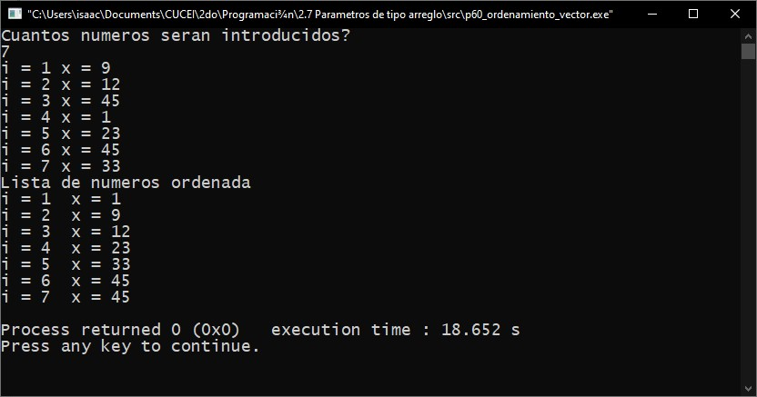

Módulo 3: Manejo de funciones.
3.1. Definición.
En el lenguaje de programación C, una función es el equivalente a lo que es una subrutina en otros lenguajes de programación. Es una forma conveniente de encapsular o aislar algunos cálculos o algún procedimiento, los cuales se pueden emplear despúes. Las funciones se diseñan para cumplir con una tarea especifica y para tener un código más modulado y organizado.
Las funciones en el lenguaje C pueden aparecer en cualquier orden y en uno o varios archivos fuente, pero una función no puede separarse, ni en el mismo archivo ni en diferentes.
Al igual que las variables, las funciones también necesitan ser declaradas. Lo que se les conoce como prototipo de una función. Esto solo se necesita hacer si las funciones fueron declaradas después de la función principal.
Parámetros:
Los parámetros son las variables nombradas en la lista entre paréntesis de la definición de una función. Los parámetros deben ser declarados con su tipo de dato y su respectivo identificador. Es posible no especificar exactamente la cantidad de parámetros que recibirá la función, para esto es necesario poner una coma seguida de tres puntos (,...), esto le indica al compiladorr que puede que pasen más argumentos a la función, pero no se le proporciona más información acerca de ellos.
Variables y sus alcances:
Las variables que son declaradas dentro de una función comienzan a existir desde el momento en el que se invoca a la función y son borradas de memoria cuando la función termina, estas son llamadas variables locales.
Como alternativa de las variables locales, se pueden declarar variables externas o globales, las cuales son accesibles desde cualquier parte del programa.
Cuando una variable es transferida de una función a otra, normalmente se transfiere "por valor", es decir, que la función que es invocada recibe los valores de sus argumentos en variables temporales y no en las originales. Una función que es invocada en el lenguaje C no puede modificar el valor de una variable que esta en la función que la invocó, unicamente puede modificar su copia privada y temporal.
3.2. Funciones sin paso de párametros.
Las funciones sin paso de párametros son aquellas que no reciben ningún valor de entrada cuando es invocada, únicamente ejecuta el código que contiene dentro de la función y puede regresar un valor a la función que la invocó.
Ejemplo (Práctica 52).
Pseudocódigo:
Librerías
Raiz()
Inicio
Real num, res
Imprimir("Ingresa el número que se le desea aplicar la raíz cuadrada: ")
Leer(num)
res <- Raizcuad(num)
Regresa res
Fin
Potencia()
Inicio
Real num, res, potencia
Imprimir("Ingresa el número que se le desea aplicar la potencia: ")
Leer(num)
Imprimir("Ingresa la potencia deseada: ")
Leer(potencia)
res <- num ^ potencia
Regresar res
Fin
Coseno()
Inicio
Real num, res
Imprimir("Ingresa el número que se desea calcular el coseno: ")
Leer(num)
res <- cos(num)
Regresa res
Fin
logaritmoNatural()
Inicio
Real num, res
Imprimir("Ingresa el número que se desea calcular el logaritmo natural: ")
Leer(num)
res <- log(num)
Regresa res
Fin
Principal()
Inicio
Entero menu <- 1, opc
Hacer
Inicio
Imprimir("Bienvenido!, Que operación quieres realizar?")
Imprimir("1. Raíz Cuadrada 2. Potencia de un numero 3. Coseno de un numero 4. Logaritmo natural
de un número. 5. Salir del programa");
Imprimir("Ingresa el numero de la opción: ");
Leer(opc)
Según sea ()
Inicio
Caso 1:
Imprimir("La raíz es: ", Raiz())
Interrumpir
Caso 2:
Imprimir("La potencia es: ", Potencia())
Interrumpir
Caso 3:
Imprimir("El coseno es: ", Coseno())
Interrumpir
Caso 4:
Imprimir("El logaritmo natural es: ", logaritmoNatural())
Interrumpir
Caso 5:
Imprimir("Adiós")
Interrumpir
Otro:
Imprimir("Opción inexistente")
Interrumpir
Fin
Fin
Mientras(menu = 1)
Regresa 0
Fin
Código en C:
Captura en ejecución:

3.3. Funciones con paso de párametros por valor.
Las funciones con paso de párametros son aquellas que reciben uno o más valores en el momento en el que son invocadas, esto con el proposito de realizar un proceso con esos datos o un proceso condicionado al valor de esos datos.
Existen dos tipos de paso de párametros, el paso de párametros por valor y el paso de párametros por referencia.
Por valor: En este tipo de paso de párametros los valores de las variables son copiados en un grupo de variables locales dentro de la función, por lo que si se modifica el valor de estas, no tendra impacto en las variables originales. Los datos primitivos como Int, Float, Double y Char utilizan este método de paso de párametros.
Por referencia: En este tipo de paso de párametros las variables no son pasadas del todo, si no que se pasa la dirección en memoria hacia la función y ya en esta se utiliza la dirección que le fue proporcionada para guardar datos, es todo lo contrario al anterior método, ya que esta si modifica el valor de las variables originales. Los datos de tipo arreglo utilizan este método de paso de párametros.
3.3.1. Funciones con parámetros usando datos primitivos.
Ejemplo (Práctica 54).
Pseudocódigo:
Librerías
Entero factorial(Entero fact)
Inicio
Entero contador, total <- 1
contador <- factorial
Hacer
Inicio
total <- total * contador
dec contador
Fin
Mientras (contador >= 1)
Regresa total
Fin
Entero Principal()
Inicio
Entero fact
Imprimir("Ingrese el factorial a calcular: ")
Leer(fact)
Imprimir("El factorial del número que elegiste es: ", factorial(fact))
Regresa 0
Fin
Código en C:
Captura en ejecución:

3.3.2. Funciones con parámetros usando arreglos.
Ejemplo (Práctica 60).
Pseudocódigo:
Librerías
Constante TAM 100
Entero ordenar (entero n, entero x[])
Principal
Inicio
Entero i, n, x[TAM]
Imprimir("¿Cuántos números serán introducidos?")
Leer(n)
Desde(i <- 0; i < n; inc i)
Inicio
Imprimir("i = ", i + 1, "x = ")
Leer(x[i])
Fin
ordenar(n, x)
Imprimir("Lista de números ordenada")
Desde (i <- 0; i < n; inc i)
Imprimir("i = ", i + 1, "x = ", x[i])
Regresa(0)
Fin
Entero ordenar(Entero n, Entero x[])
Inicio
Entero i, elem, temp
Desde(elem <- 0; elem < n - 1; inc elem)
Inicio
Desde(i <- elem + 1; i < n; inc i)
Inicio
Si (x[i] < x[elem])
Inicio
temp <- x[elem]
x[elem] <- x[i]
x[i] <- temp
Fin
Fin
Fin
Regresa(0)
Fin
Código en C:
Captura en ejecución:
